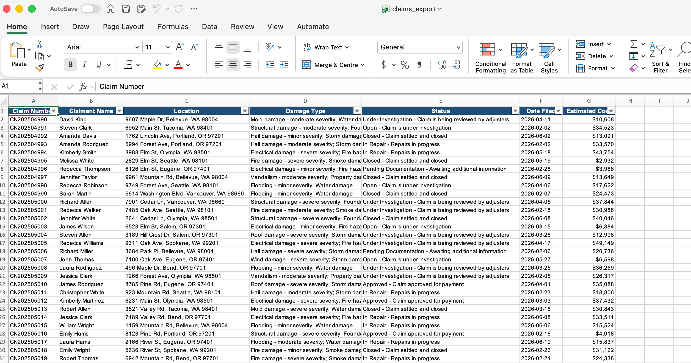
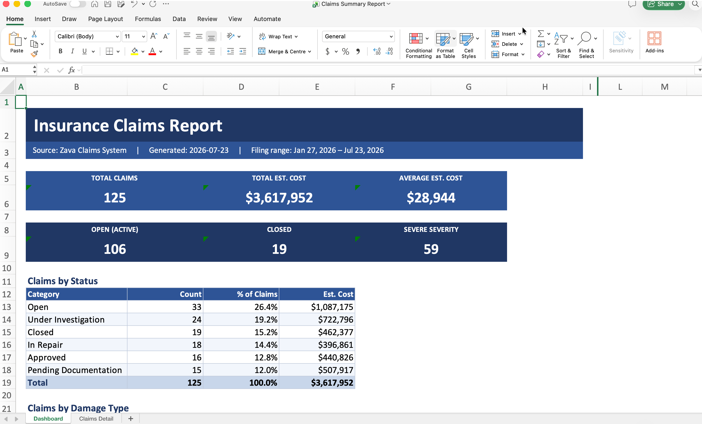
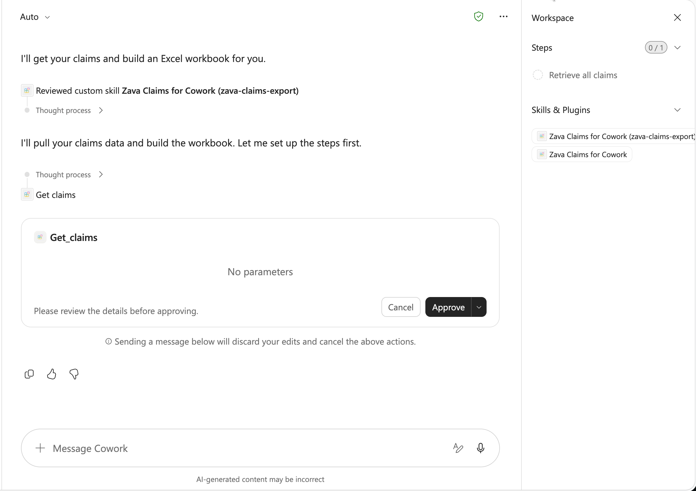

Lab CWRK03 - Add Entra SSO Authentication to a Cowork Plugin
Do these labs if you want to extend Copilot Cowork
Table of Contents
In this lab, you'll take the Zava Claims MCP server from Lab E10 and wire it up to a Cowork plugin with Microsoft Entra SSO authentication. By the end, Cowork will authenticate users with their existing Microsoft 365 credentials — no extra sign-in prompts, no secrets sitting in plain text.
The pattern here is the same one you'd use for any Entra-secured API: register an app, create an SSO auth config, update the app registration with the new URI, and point your plugin at it. The Zava claims scenario is just the concrete example.
Prerequisites
- Access to Azure Portal with permissions to manage app registrations
- Access to Teams Developer Portal
- Access to Copilot Cowork
Why this lab matters
Most organizations have sensitive data locked behind authenticated APIs — claims records, financial transactions, patient data. Getting that data into a usable format typically means manual exports, copy-paste workflows, and formatting spreadsheets by hand. Every time.
In this lab, you'll solve three problems at once:
-
Secure access without friction — Users authenticate once via Microsoft Entra SSO. No client secrets, no API keys in config files, no extra sign-in prompts. The token flows silently from that point on, and access is governed by your existing Entra ID policies.
-
Skills that transform data consistently — Instead of relying on users to remember formatting rules or calculation logic, you encode that knowledge in a Cowork skill. The skill takes raw claims data and produces a structured Excel report with the right calculations every time — no human error, no variation.
-
Repeatable value across teams — Here's the real payoff: once you build this skill, any department can use it. Finance needs the same claims data in their format? Legal needs a compliance view? Create a new skill or reuse the existing one — the secure MCP connection and the plugin infrastructure stay the same. One investment, many consumers.
Zava Insurance has claims data served by an authenticated MCP server. You'll connect Cowork to that server with SSO, then use a skill to transform raw data into a formatted Excel report:
| Before skill | After skill |
|---|---|
 |
 |
Exercise 1: Project setup
In this exercise you'll get the authenticated MCP server running and grab the plugin source code that you'll wire up with SSO.
Step 1: Get the MCP server code
If you already have the Zava MCP server from Lab E10, navigate to that directory. Otherwise, clone the repo and navigate to the server:
git clone https://github.com/microsoft/copilot-camp.git
cd copilot-camp/src/extend-m365-copilot/path-e-lab10-mcp-auth/zava-mcp-server
npm install
Step 2: Run the server and Dev Tunnel
You need the MCP server accessible over a public URL so Cowork can reach it.
-
Start Azurite (local storage emulator) in one terminal:
npm run start:azurite -
Load sample data (if you haven't already):
npm run init-data -
In VS Code's terminal panel, select the Ports tab, forward port
3001, then right-click the address and set Port Visibility → Public. Copy the tunnel URL — you'll need it shortly. -
Build and start the MCP server:
npm run build npm run start:mcp-http
Verify it's running by visiting http://127.0.0.1:3001/health — you should see "authentication": "OAuth enabled" in the response.
Save your tunnel URL
You'll use this URL multiple times in the following exercises. Keep it handy — for example: https://abc123def456.use.devtunnels.ms
Step 3: Get the plugin source
The plugin code is already in this repo at src/cowork/zava-claims-sso. Open that folder:
cd copilot-camp/src/cowork/zava-claims-sso
Take a look at the structure:
zava-claims-sso/
├── manifest.json
├── color.png
├── outline.png
├── package.json
└── skills/
└── zava-claims-export/
└── SKILL.md
This is a standard Cowork plugin — a manifest, icons, and a skill that knows how to turn raw claims data into a formatted Excel report.
Step 4: Update the MCP server URL in the plugin
Open manifest.json and find the agentConnectors section. Replace the mcpServerUrl value with your Dev Tunnel URL + /mcp/messages:
"mcpServerUrl": "https://<YOUR_DEVTUNNEL>.devtunnels.ms/mcp/messages"
Don't touch the authorization section yet — that's coming in Exercise 3.
Exercise 2: Create the Entra SSO app registration
This is the identity plumbing. You're telling Microsoft Entra "here's my API, here's who's allowed to call it, and here's the scope they need." If you already have the Entra app registration from Lab E10, you can reuse it — just make sure the redirect URI and scope are configured as described below.
Step 1: Register the app in Entra ID
- Go to Azure Portal → Microsoft Entra ID → App registrations
- Click New registration
- Configure:
- Name:
Zava Claims MCP Server(or reuse your existing one from Lab E10) - Supported account types: Accounts in any organizational directory (Any Microsoft Entra ID tenant - Multitenant)
- Redirect URI: Platform = Web, URI =
https://teams.microsoft.com/api/platform/v1.0/oAuthConsentRedirect
- Name:
- Click Register
- Copy the Application (client) ID — you need this in the next steps
Why multitenant?
Multitenant lets users from any Microsoft 365 organization authenticate. For internal-only scenarios, you can restrict to your tenant later.
Step 2: Expose an API and add a scope
- In your app registration, go to Expose an API
- Click Add next to Application ID URI — accept the default
api://<YOUR_CLIENT_ID>format - Click Add a scope:
- Scope name:
access_as_user - Who can consent: Admins and users
- Admin consent display name:
Access Zava Claims - Admin consent description:
Allows the app to access Zava Claims data on behalf of the signed-in user - User consent display name:
Access Zava Claims - User consent description:
Allows this app to access your Zava Claims data on your behalf - State: Enabled
- Scope name:
- Click Add scope
-
Now click Add a client application and add:
ab3be6b7-f5df-413d-ac2d-abf1e3fd9c0bCheck the box for your
access_as_userscope and click Add application.
What's that client ID?
ab3be6b7-f5df-413d-ac2d-abf1e3fd9c0b is the Microsoft Enterprise token store. This is the service that Cowork uses to obtain tokens on behalf of the user. It's always this value — hardcoded by Microsoft.
Step 3: Create the SSO registration in Teams Developer Portal
Now you need somewhere for those credentials to live that isn't hardcoded in your plugin files. That's what the Teams Developer Portal's Entra SSO registration does — it stores the configuration securely and hands your plugin a reference ID.
- Open Teams Developer Portal → Tools → Microsoft Entra SSO client ID registration
- Click Register client ID (or New client registration if you have existing ones)
- Fill in:
- Registration name:
zava-cowork-sso - Base URL:
https://<YOUR_DEVTUNNEL>.devtunnels.ms/mcp/messages(your tunnel URL + path) - Restrict usage by organization: Any Microsoft 365 organization
- Restrict usage by Teams app: Any Teams app (for testing and store validation only)
- Client (application) ID: Paste the client ID from your Entra app registration
- Registration name:
- Click Save
- The portal generates an Application ID URI — copy this value
Don't skip copying the Application ID URI
You need this in the next step to update your Entra app registration. It's different from the one you set up in Step 2.
Step 4: Update the Entra app with the new Application ID URI
The Teams Developer Portal just generated a new Application ID URI for SSO. You need to add it to your Entra app registration.
- Go back to Azure Portal → your app registration
- Go to Manifest in the left navigation
-
Find the
identifierUrisarray and add the new Application ID URI from Step 3:"identifierUris": [ "api://<YOUR_CLIENT_ID>", "<APPLICATION_ID_URI_FROM_TEAMS_PORTAL>" ] -
Click Save
Why the manifest editor?
The Entra admin center UI only shows one Application ID URI at a time. Adding multiple URIs requires the manifest editor. Your existing URI and scopes still work fine — this doesn't break anything.
Now go back to Expose an API. Notice the scope has been updated to reflect the new URI. Copy the full scope value (it'll look something like api://<URI>/access_as_user) — you need it in the next step.
Step 5: Complete the SSO registration with the scope
- Go back to Teams Developer Portal → Tools → Microsoft Entra SSO client ID registration
- Open your
zava-cowork-ssoregistration - Paste the full scope value from the previous step into the Scope field
- Click Save
- Copy the Microsoft Entra SSO registration ID — this is your
OAuthPluginVaultreference ID
This reference ID is what goes into your plugin manifest. No secrets in your code, just a pointer to where the real credentials live.
Exercise 3: Update the plugin with authentication
Three moves from anonymous to authenticated. You have the reference ID — now plug it in.
Step 1: Update manifest.json with the reference ID
Open manifest.json in the zava-claims-sso folder. Find the authorization section in agentConnectors and replace the placeholder:
"authorization": {
"type": "OAuthPluginVault",
"referenceId": "<YOUR_SSO_REGISTRATION_ID>"
}
Paste your real Microsoft Entra SSO registration ID where you see the placeholder. That's it — the type is already OAuthPluginVault, you're just filling in the reference.
Step 2: Package the plugin
Zip all files in the plugin folder (not the folder itself — the contents):
On macOS/Linux:
npm run package:unix
On Windows:
npm run package
This produces zava-claims-cowork-plugin.zip with manifest.json, icons, and the skills/ folder at the root level.
Validate before uploading
Quick sanity check: unzip the file and confirm manifest.json is at the root (not inside a subfolder). A nested folder structure will cause upload failures.
Exercise 4: Test the authenticated plugin in Cowork
Time to see it work. You need the MCP server configured to accept the SSO tokens, then upload your plugin and test.
Step 1: Update the MCP server environment for SSO
Go to your Zava MCP server directory and update the env/.env.dev file with the SSO-specific values:
# OAuth 2.0 Resource Server
OAUTH_ACCEPTED_ISSUERS=https://login.microsoftonline.com/common/v2.0
OAUTH_ACCEPTED_AUDIENCES=api://<YOUR_CLIENT_ID>,<APPLICATION_ID_URI_FROM_TEAMS_PORTAL>
OAUTH_REQUIRED_SCOPES=<FULL_SCOPE_VALUE>
OAUTH_VALIDATE_ISSUER=false
OAUTH_ACCEPTED_TENANT_IDS=<YOUR_TENANT_ID>
OAUTH_JWKS_URIS=https://login.microsoftonline.com/common/discovery/v2.0/keys
# Authorization endpoints for MCP client discovery
OAUTH_AUTHORIZATION_ENDPOINT=https://login.microsoftonline.com/common/oauth2/v2.0/authorize
OAUTH_TOKEN_ENDPOINT=https://login.microsoftonline.com/common/oauth2/v2.0/token
# Server
RESOURCE_IDENTIFIER=https://<YOUR_DEVTUNNEL>.devtunnels.ms
SERVER_BASE_URL=https://<YOUR_DEVTUNNEL>.devtunnels.ms
PORT=3001
HOST=127.0.0.1
NODE_ENV=development
# CORS (comma-separated origins)
ADDITIONAL_ALLOWED_ORIGINS=http://localhost:6274,https://<YOUR_DEVTUNNEL>.devtunnels.ms
# Azure Table Storage (Azurite for local dev)
AZURE_STORAGE_CONNECTION_STRING="UseDevelopmentStorage=true"
Replace the placeholders:
| Placeholder | Value |
|---|---|
<YOUR_CLIENT_ID> |
Application (client) ID from your Entra app registration |
<APPLICATION_ID_URI_FROM_TEAMS_PORTAL> |
The Application ID URI generated in Exercise 2, Step 3 |
<FULL_SCOPE_VALUE> |
The complete scope from Exercise 2, Step 4 (e.g., api://<URI>/access_as_user) |
<YOUR_TENANT_ID> |
Your Microsoft 365 tenant ID |
<YOUR_DEVTUNNEL> |
Your Dev Tunnel URL (no trailing slash) |
Two audiences matter
The OAUTH_ACCEPTED_AUDIENCES field needs both your original Application ID URI (api://<client-id>) and the new one from the Teams Developer Portal. The token can arrive with either audience depending on how the flow resolves.
Restart the MCP server after updating:
npm run build
npm run start:mcp-http
Step 2: Upload the plugin to Cowork
- Open Copilot Cowork
- Click the + icon
- Scroll down to Customize (manage skills and plugins)
- On the Customize page, upload your
zava-claims-cowork-plugin.zipfile
That's it — no additional connect step. Once uploaded, Cowork picks it up immediately.
Step 3: Test with an authenticated prompt
Type this prompt in Cowork:
Create a claims report in Excel
Cowork will display a tool approval dialog — this is a one-time consent step that authorizes Cowork to call the MCP server's tools on your behalf. Click Approve to continue.

Once approved, the flow completes end-to-end: Cowork authenticates via SSO, calls the Zava MCP server with a valid token, retrieves the claims data, and your skill transforms it into a formatted Excel report. No manual data export, no reformatting — just the finished output.
If sign-in fails
Check three things: (1) your Dev Tunnel is still running and public, (2) the OAUTH_ACCEPTED_AUDIENCES in .env.dev includes both URIs, and (3) the redirect URI https://teams.microsoft.com/api/platform/v1.0/oAuthConsentRedirect is configured in your Entra app's Authentication section.
CONGRATULATIONS!
You have completed Lab CWRK03 - Copilot Cowork